Le Programme & Topo
Vendredi soir à Paris, dimanche soir de retour via Genève. Trois jours, minute par minute.
Vendredi
-
Soir Départ majoritairement de Paris (la majorité en soirée, certains dès l'après-midi selon les disponibilités) — quelques personnes partent aussi d'ailleurs. Un groupe rejoindra très probablement en train jusqu'à Bellegarde-sur-Valserine, puis louera un minibus 9 places sur place (à confirmer selon le nombre de voitures disponibles).
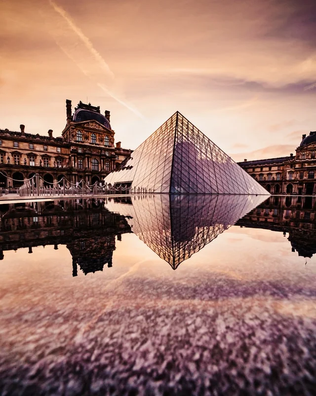
-
Nuit Bivouac à la belle étoile près du Grand-Bornand.
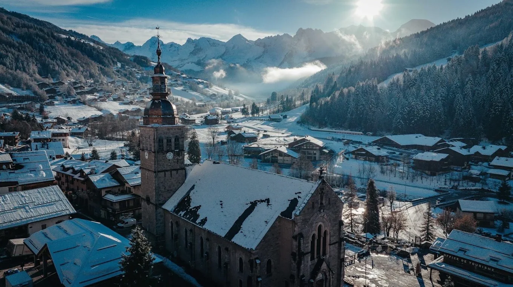
Samedi
- 08:30 Récupération du matériel technique au Grand-Bornand.
- 10:00 Départ des Troncs vers le refuge de Gramusset, via le Col de l'Oulettaz (pas par le Col des Annes pour le gros du groupe).
-
10:00 En parallèle, un groupe de conducteurs dépose les voitures à la Chartreuse du Reposoir puis rejoint le groupe par le Col des Annes.
Col des Annes → Gramusset : ~3,8km | 1h30 à 2h00
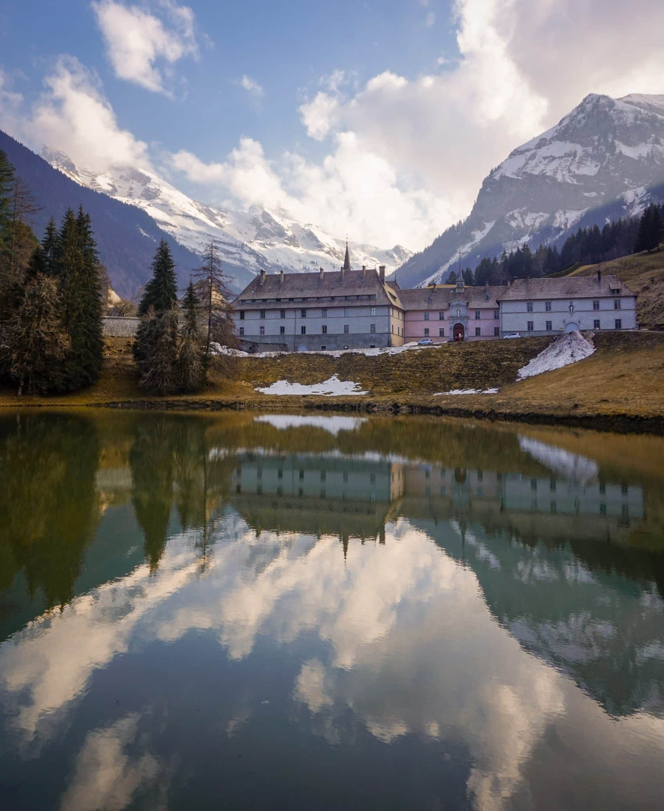
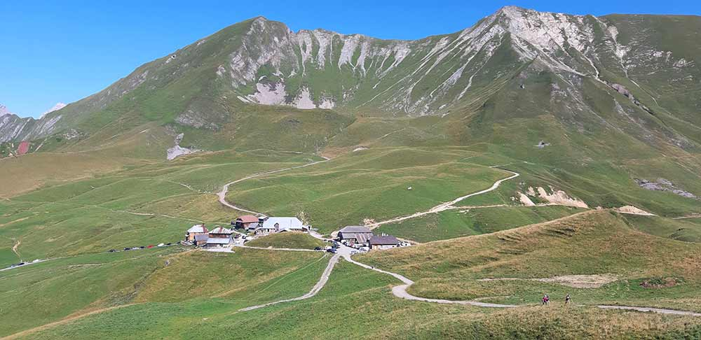
-
Aprem Arrivée à Gramusset en début d'après-midi, puis activité au programme (à définir).
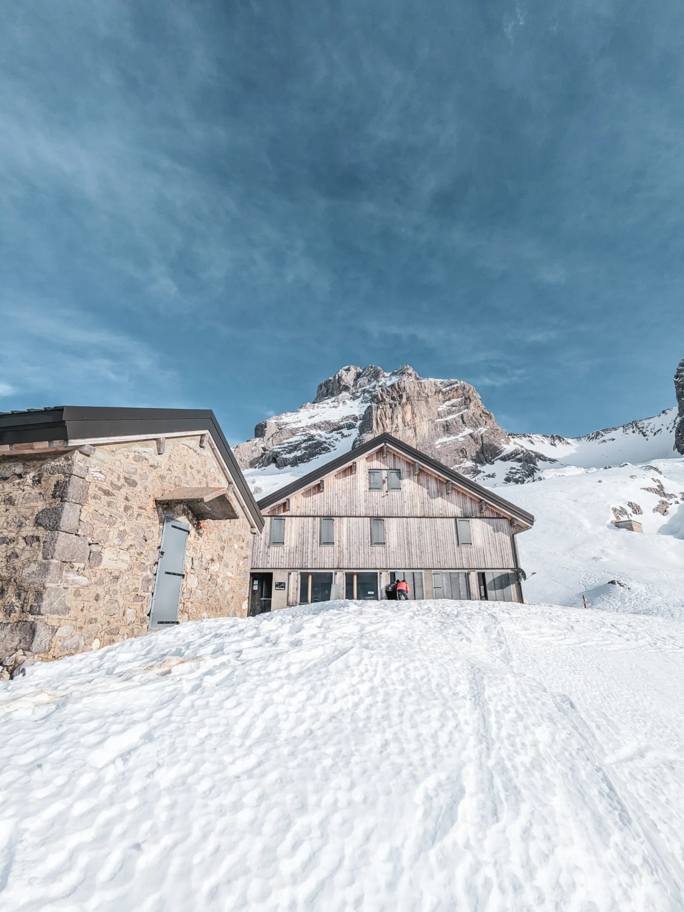
-
18:00 Repas de fête au refuge.
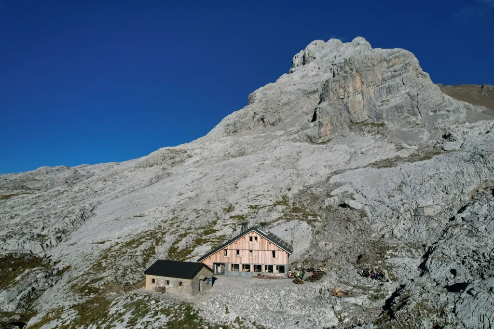
- 21:30 Coucher relativement tôt — la nuit sera courte.
Dimanche
- 04:30 Réveil.
-
05:00 Départ frontale pour l'ascension.
Dénivelé: +590m | Durée: 1h30 à 2h00
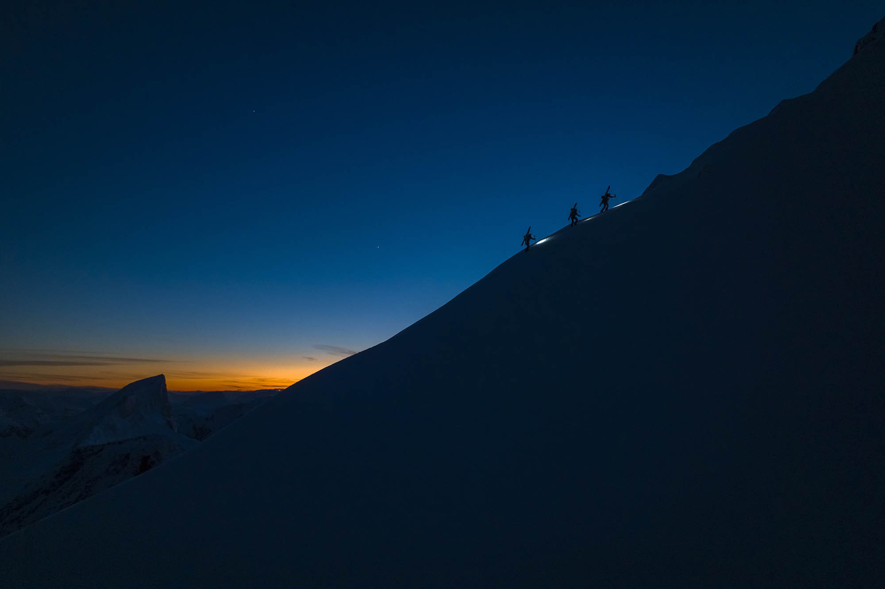
-
07:30 Sommet de la Pointe Percée, lever de soleil à 2750m.
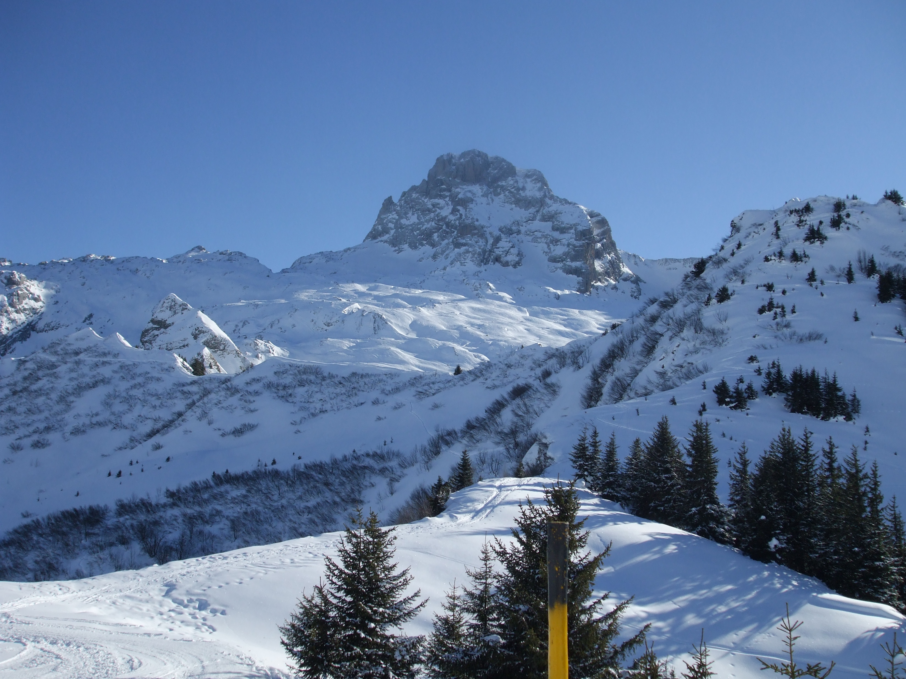
-
08:30 Descente par les Cheminées de Sallanches.
Durée : ~2h
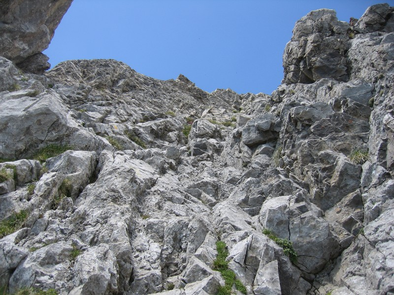
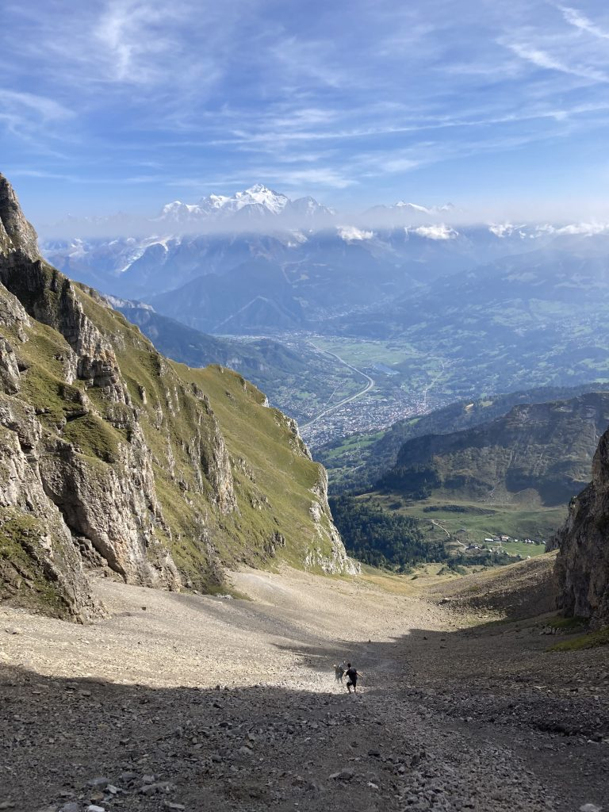
-
10:30 Arrivée au Refuge de Doran (1495m). Pause.
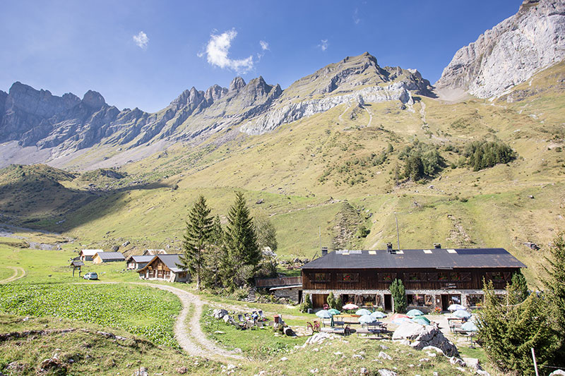
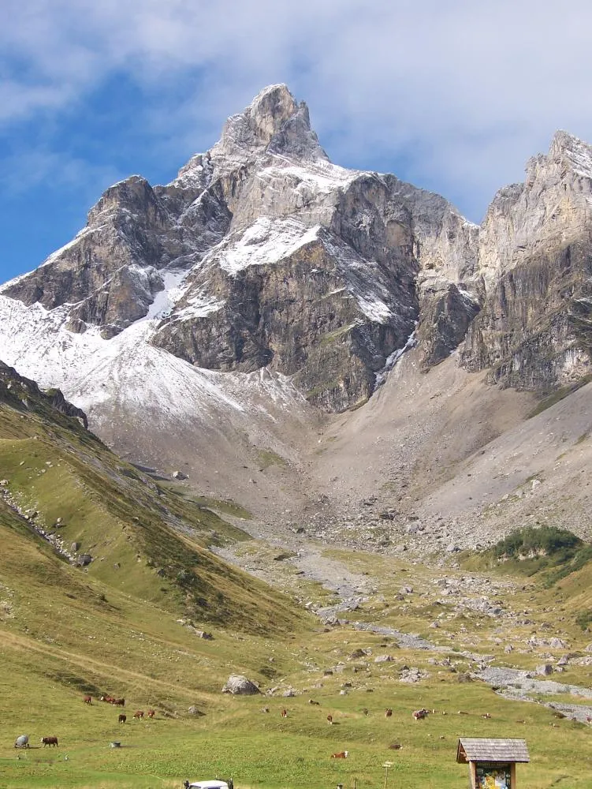
-
11:30 Remontée au Col de la Forclaz — c'est là qu'aura lieu le vrai repas de midi — puis redescente au Reposoir.
Doran → Reposoir via Col de la Forclaz | ~3h30 avec pause
- 15:00 Fin du périple au parking du Reposoir.
- 16:00 Piscine municipale de Cluses — détente méritée.
-
18:30 Messe à la Fraternité Saint-Pie X, à Genève.
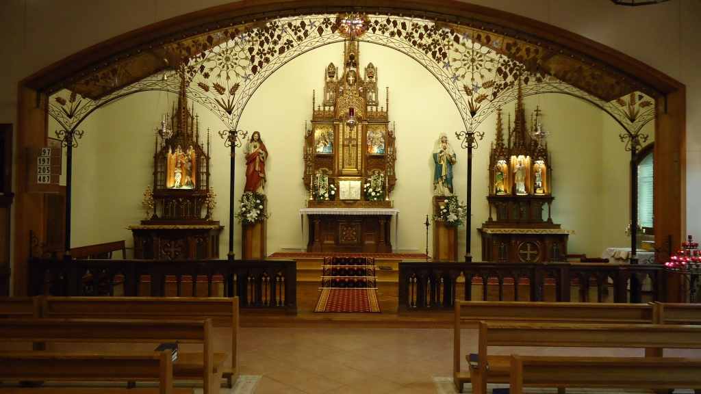
- Ensuite Retour vers Paris ou vers les domiciles de chacun — en voiture, ou en train depuis Bellegarde-sur-Valserine pour certains.